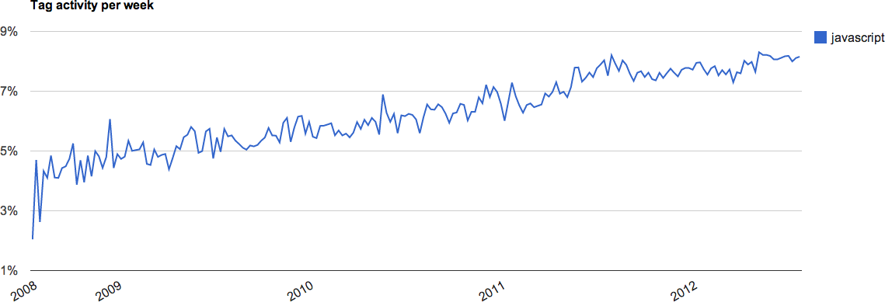
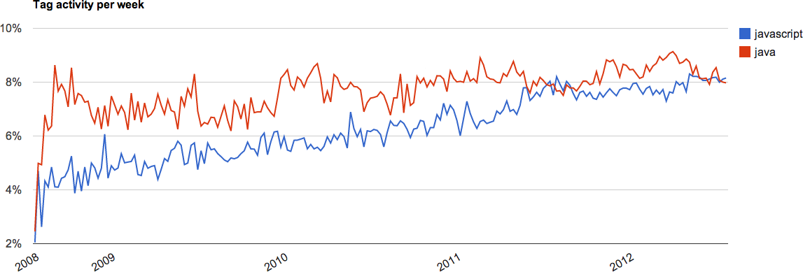

JavaScript the Next Big
bytecode
- Job : Craftsman developer at Xebia
- Expertise : Web application black belt
- Twitter: @MatBreton
De quoi allons nous parler ?
De quoi allons nous parler ?
- De JavaScript !
De quoi allons nous parler ?
- De son apogée
De quoi allons nous parler ?
- De la vie de tous les jours avec lui
De quoi allons nous parler ?
- Et de son avenir
L'apogée


JavaScript est partout
- NodeJS
- Bootstrap
- AngularJS
- BackboneJS
- EmberJS
Pourquoi ?
Un serveur web
var express = require('express');
var app = express();
app.get('/', function (req, res) {
res.send('Coucou');
});
app.listen(3000);
Programmation fonctionnelle
_.chain([1,2,3,200])
.filter(function(num) { return num % 2 == 0; })
.tap(alert)
.map(function(num) { return num * num })
.value();
=> // [2, 200] (alerted)
=> [4, 40000]
- Productif
- Simple
- Productif
- Rapide
- Simple
- Productif
Tout va bien alors ?
- Rapide
- Simple
- Productif
Parce que WTF !
Outilage faible
Il est où mon JDK ?
L'API de base JavaScript est pauvre
Il est où mon JDK ?
 Moment.js
Moment.js
The next big #&FAI&L ?
- Rapid
e
- Simple
- Productif
Les enjeux
|
Rester Productif
Maintenance plus facile
Typage plus fort
Plus compréhensible
Outils plus puissants
ByteCode of what ?
- CoffeeScript
- LiveScript
- IcedCoffeeScript
- Parsec
- Contracts.coffee
- Uberscript
- ToffeeScript
- Caffeine
- heap.coffee
- JS11
- Kaffeine
- Jack
- Moescript
- pogoscript
- LispyScript
- GorillaScript
- RedScript
- Daonode
- Caja
- ADsafe
- FBJS
- Jacaranda
- Dojo
- Local.js
- Dart
- TypeScript
- asm.js
- JavaScript++
- MileScript
- Elm
- JSX
- Este.js
- Swym
- Typecast.js
- ContextJS
- Context-oriented
- Objective-J
- Mochiscript
- jangaroo
- Flapjax
- jLang
- TIScript
- js--
- Opal
- HotRuby
- ColdRuby
- rb2js
- RubyJS
- Red
- Quby
- 8ball
- PYXC-PJ
- Pyjamas
- Pyjaco
- Pyjs
- Skulpt
- PyCow
- PyvaScript
- RapydScript
- Brython
- PythonScript
- Perlito
- GWT
- Java2Script
- j2js
- BicaJVM
- Doppio
- Kotlin
- Ceylon
- GrooScript
- Scala.js
- js-scala
- scalagwt
- JScala
- jsc
- JSIL
- Script#
- SharpKit
- Saltarelle
- FunScript
- Pit
- WebSharper
- NemerleWeb
- JScriptSuite
- BiwaScheme
- ClojureScript
- clojurejs
- Chlorinejs
- wisp
- EdgeLisp
- nconc
- Parenscript
- Ralph
- scheme2js
- Scriptjure
- Spock
- Whalesong
- Ocamljs
- O'Browser
- Js_of_ocaml
- UHC
- ghcjs
- jmacro
- shakespeare-js
- YHC
- jshaskell
- Smallscript
- Emscripten
- LLJS
- Mandreel
- qb.js
- Go2js
- Haxe
- Fantom
- LZX
- OpenLaszlo's
- Scratch
- ScriptBlocks
- JsMaker
- Meemoo
- NoFlo
- sqld3
- Oia
- Plaid
- Quixe
- Gnusto
- Logo
- Interpreter
- p2js
- Reb2Static
- RPN
- phype
- jsForth
- wForth
- Agda
- XLCC
- SMLtoJs
- lua.js
- Brozula
- Pygmy
- browserl
- ErlyJS
- Topaz
- NGN
- APL
- CobolScript
- Idris
- Narcissus
- DoctorJS
- Jasy
- PyNarcissus
- pyjon
- rbnarcissus
- reflect.js
- bdParse
- parse-js
- ZeParser
- Esprima
- Mozilla
- js.js
- jison
- OMeta/JS
- PEG.js
- Canopy
- JS/CC
- jsparse
- ReParse
- p4js
- JSGLR
- antlr
- Cruiser.Parse
- JsonML
- treehugger
- burrito
- js-traverse
- altJS
- PureScript
Plus de 170 languages symbiotiques
Les leaders
TypeScript
Powered by

En 2011
En 2011
Peut être exécuté dans une machine virtuelle
Seul une version Chromium supporte cette machine virtuelle
Est donc côté serveur & côté client
Ou compilé en JavaScript
Dans les deux cas il est plus rapide
Typage fort, mais optionel
var name = "Mathieu";
// ou
var name:String = "Mathieu";
Model Orienté Objet
abstract class Animal{
var name = "";
Animal.fromName(this.name);
}
class Pet extends Animal{
var owner = ""
}
Asynchronisme basé sur des futures
import 'dart:io';
import 'dart:async';
void printDailyNewsDigest() {
File file = new File("dailyNewsDigest.txt");
file.readAsString()
.then((content) => print(content))
.catchError((error) =>
print("Sorry, no news today. Here's why:\n$error"));
}
Forte intégration avec Polymer
import 'package:polymer/polymer.dart';
import 'dart:html';
@CustomTag('click-counter')
class ClickCounterElement extends PolymerElement {
@observable int count = 0;
void increment(Event e, var detail, Node target) {
count += 1;
}
}
Fourni avec un écosystème riche
Ah, une dernière chose ...
Ca gère le multi-threading !
Les isolates
import 'dart:isolate';
childIsolate() {
port.receive((msg, replyTo) {
print('doing some work');
if (replyTo != null) replyTo.send('shutdown');
});
}
main() {
var sender = spawnFunction(childIsolate);
var receiver = new ReceivePort();
receiver.receive((msg, _) {
if (msg == 'shutdown') {
print('shutting down');
receiver.close();
}
});
sender.send('do work please', receiver.toSendPort());
}
Créé en Décembre 2009 par Jeremy Ashkenas
Peut être utilisé dés à présent avec le transcompilateur
Une syntaxe très épurée
( ) { } ; , return*
( ) { } ; , return*
Du sucre syntaxique
# for comprehension
foods = ['broccoli', 'spinach', 'chocolate']
eat food for food in foods when food isnt 'chocolate'
# for with range
countdown = (num for num in [10..1])
# Chained opetator
cholesterol = 127
healthy = 200 > cholesterol > 60
Encore du sucre syntaxique
# New operators
winner = yes if pick in [47, 92, 13]
launch() if ignition is on
volume = 10 if band isnt SpinalTap
letTheWildRumpusBegin() unless answer is no
solipsism = true if mind? and not world?
Beaucoup de sucre syntaxique
#destructuring assignement
weatherReport = (location) ->
# Make an Ajax request to fetch the weather...
[location, 72, "Mostly Sunny"]
[city, temp, forecast] = weatherReport "Berkeley, CA"
#the strings become magic
sentence = "#{ 22 / 7 } is a decent approximation of π"
html = """
‹strong>
cup of coffeescript
‹/strong>
"""
Modèle orienté objet
class Animal
constructor : (@name)->
class Pet extends Animal
construtor : (@owner, name) ->
super name
cat = new Pet "Mathieu", "Garfield"
if cat instanceof Pet
console.log "#{cat.name} is a Pet"
Génère un JavaScript propre & lisible
class Animal
constructor : (@name)->
class Pet extends Animal
construtor : (@owner, name) ->
super name
cat = new Pet "Mathieu", "Garfield"
if cat instanceof Pet
console.log "#{cat.name} is a Pet"
TypeScript
Donc très bien intégré dans la suite Visual Studio

Ressemble à ce qu'il y aura en ECMA6
Super ensemble de JavaScript
Modèle orienté objet
Les génériques
Modularisation du code
Nécessite des interfaces d'interopérabilité
github.com/borisyankov/DefinitelyTyped
/*
Interface for the AJAX setting that will configure the AJAX request
*/
interface JQueryAjaxSettings {
accepts?: any;
async?: boolean;
beforeSend? (jqXHR: JQueryXHR, settings: JQueryAjaxSettings): any;
cache?: boolean;
complete? (jqXHR: JQueryXHR, textStatus: string): any;
contents?: { [key: string]: any; };
//According to jQuery.ajax source code, ajax's option actually allows contentType to set to "false"
// https://github.com/borisyankov/DefinitelyTyped/issues/742
contentType?: any;
context?: any;
converters?: { [key: string]: any; };
crossDomain?: boolean;
data?: any;
dataFilter? (data: any, ty: any): any;
dataType?: string;
error? (jqXHR: JQueryXHR, textStatus: string, errorThrow: string): any;
global?: boolean;
headers?: { [key: string]: any; };
ifModified?: boolean;
isLocal?: boolean;
jsonp?: string;
jsonpCallback?: any;
mimeType?: string;
password?: string;
processData?: boolean;
scriptCharset?: string;
statusCode?: { [key: string]: any; };
success? (data: any, textStatus: string, jqXHR: JQueryXHR): any;
timeout?: number;
traditional?: boolean;
type?: string;
url?: string;
username?: string;
xhr?: any;
xhrFields?: { [key: string]: any; };
}
So ...
JavaScript c'est bien, mais typer c'est mieux
CoffeeScript & TypeScript utilisable à court terme
CoffeeScript peut provoquer des caries
Dart est le plus complet à long terme